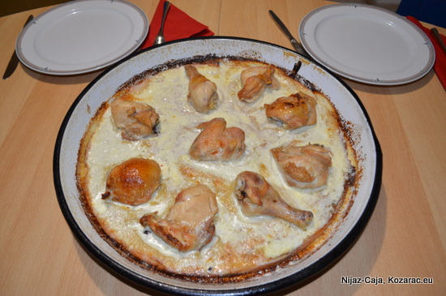

Kvrgusa

Opis
Kvrgusa, tradicionalno jelo kozarackog kraja.
Sastojci
- 300g brasna
- 2 jaja
- 100ml mlijeka ili jogurta
- Prasak za pecivo
- Pilece meso po zelji
- 1 krompir srednje velicine
- Mala pavlaka
Postupak pripreme
- U ciniju usuti brasno, prasak za pecivo, jaja i mlijeko te umutiti
- Po potrebi dodati vode (tijesto bi trebalo biti malo guscve nego smjesa za palacinke)
- Krompir oguliti i nasjeckati na kockice te dodati u tijesto
- Meso malo proprziti u tavi
- Tijesto uliti u nauljenu tepsiju
- Preko tijesta rasporediti meso
- Staviti u rernu i peci oko 15 minuta na 200 stepeni
- Kada kvrgusa malo porumeni izvaditi je iz rerne te dodati pavlake preko (kolicina po zelji)
- Vratiti u rernu da se dopece jos 5-10 minuta
Prijatno!